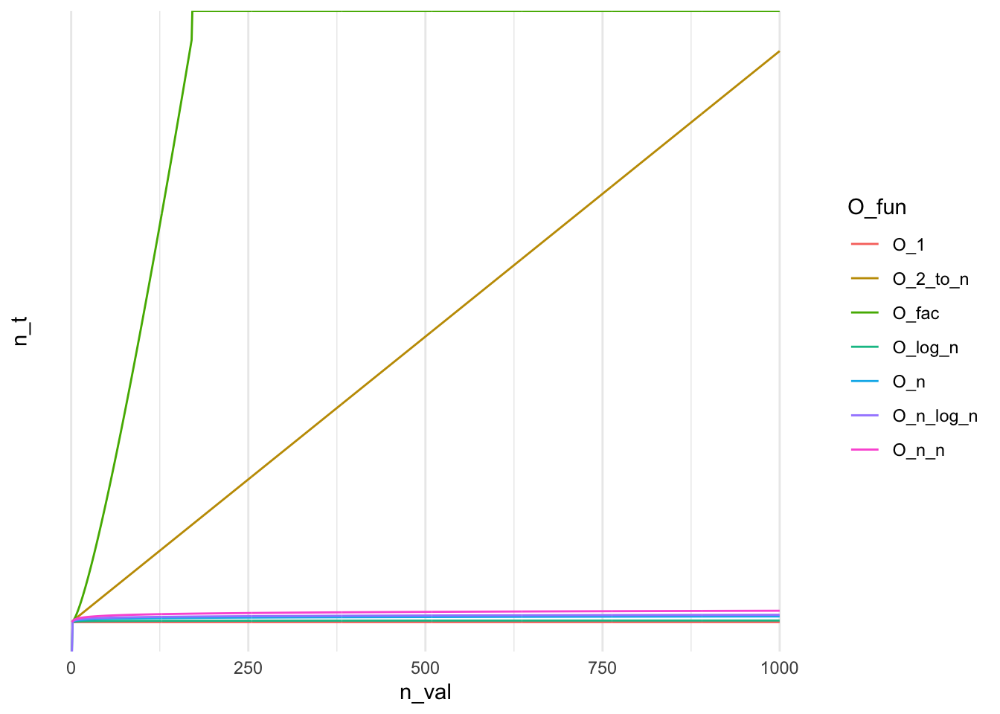

O_1 <- function(n) {(rep(1,length(n)))}
O_log_n <- function(n) {log(n)}
O_n <- function(n) {n}
O_n_log_n <- function(n) {n * log(n)}
O_n_n <- function(n) {n^2}
O_2_to_n <- function(n) {2^n}
O_fac <- function(n) {factorial(n)}Beauty of R and Big-O
fun
Big-O
The purpose of this is not to provide yet another primer on the Big-O/\(\Omega\)/\(\Theta\) notation but to share my enduring appreciation for working with R. I will introduce Big-O only briefly to provide context but I would refer all of those who are interested to the linked materials.
What is Big-sth notation…
When analysing functions, we may be interested in knowing how fast a function grows. For instance, for function \(T(n)=4n^2-2n+2\), after ignoring constants, we would say that \(T(n)\) grows at the order of \(n^2\). With respect to the Big-O notation we would write \(T(n)=O(n^2)\)1. Most commonly, in computer science, we would differentiate between Big O, Big Theta \((\Theta)\) and Big Omega \((\Omega)\). In a nutshell, the differences between those common notations can be summarised as follows:
| Notation | Growth Rate | Running Case | Comparison |
|---|---|---|---|
| Big-O | Equivalent to \(\le\), growth less or equal specific value | Worst case | Longest amount of time it could take to algorithm to complete |
| Big-Omega \((\Omega)\) | Equivalent to \(\ge\), growth greater or equal specific value | Best case | Compared to Big-O, reflects smaller amount of time |
| Big-Theta \((\Theta)\) | Equivalent to \(=\), growth equal specific value | Average case | Reflects lower and upper bound of the running time |
The task at hand …
So I wanted to compare a speed of some algorithms, say \(n*\log(n)\), \(\log(n)\), \(n^2\) and so forth. I need a quick visual aid where I could plot some most common running times and quickly add more to compare how the common implementations perform against the algorithm I was working on.
Functions
So I’ve defined a few functions that correspond to the frequently-used Big-O curves that can be found in majority of introductory literature on the subject with the intention of quickly producing visual base for the subject.
The “requirements”
After defining the above I wanted a quick way of plotting the data. The easiest approach would be to define the table where I could execute all of the functions. Let’s say for \(n = 10\) we could do the following:
n <- 10
suppressPackageStartupMessages(library("tidyverse"))
tibble(.rows = n) %>%
mutate(O_n = map_dbl(1:n, O_1),
O_log_n = map_dbl(1:n, O_log_n))# A tibble: 10 × 2
O_n O_log_n
<dbl> <dbl>
1 1 0
2 1 0.693
3 1 1.10
4 1 1.39
5 1 1.61
6 1 1.79
7 1 1.95
8 1 2.08
9 1 2.20
10 1 2.30 The problems with this approach is apparent. I didn’t want to type O_this_and_that x number of times to name columns, call functions and then be adding removing the functions I’ve already tested. I needed for R to:
- Automatically identify all of the relevant function
- Call each function on a sequence
1:n - Pack everything in a neat table so I can play with it by plotting, etc..
Solution
The actual solution can condensed further but I have broke it down for easier readability. First I’ve started with identifying the functions.
Fun_names <- ls(pattern = "O_*")
Funs_O <- mget(Fun_names) # Create a list of functions
head(Funs_O, n = 2) # Preview$O_1
function (n)
{
(rep(1, length(n)))
}
<bytecode: 0x555558ea23e8>
$O_2_to_n
function (n)
{
2^n
}Now I needed to call each of those functions and pack the results into a tibble or a data.frame. This is achieved by the code below.
map_df(Funs_O, ~ map_dbl(1:n, ~ .x(.x)))# A tibble: 10 × 7
O_1 O_2_to_n O_fac O_log_n O_n O_n_log_n O_n_n
<dbl> <dbl> <dbl> <dbl> <dbl> <dbl> <dbl>
1 1 2 1 0 1 0 1
2 1 4 2 0.693 2 1.39 4
3 1 8 6 1.10 3 3.30 9
4 1 16 24 1.39 4 5.55 16
5 1 32 120 1.61 5 8.05 25
6 1 64 720 1.79 6 10.8 36
7 1 128 5040 1.95 7 13.6 49
8 1 256 40320 2.08 8 16.6 64
9 1 512 362880 2.20 9 19.8 81
10 1 1024 3628800 2.30 10 23.0 100I reckon it requires some explanation. map_* function are purrr’s take on R’s *apply family and map function on an element passed to the function. Starting from the inside the call map_dbl(1:n, ~.x(.)) calls function .x on current element of the sequence, which is passed as . but another .x could also work!! The map_df(O_funs, ....) call is more cheeky as the list is actual collection of functions generated via mget. So instead of iterating over numbers of strings or data frames we are iterating over collection of closures. In that case our .x becomes a closure. Full solution for \(n = 1000\) is provided below.
n <- 1e3 # This is a bad habit of mine but while in R, I've a strong preference for using 1e6 for a million, 1e2 for hundred and so forth
dta_big_o <- map_df(mget(Fun_names), ~ map_dbl(1:n, ~ .x(.x)))Preview
For \(n = 1000\) we obtain:
| O_1 | O_2_to_n | O_fac | O_log_n | O_n | O_n_log_n | O_n_n |
|---|---|---|---|---|---|---|
| 1 | 2.0e+00 | 1 | 0.00 | 1 | 0.0 | 1 |
| 1 | 4.0e+00 | 2 | 0.69 | 2 | 1.4 | 4 |
| 1 | 8.0e+00 | 6 | 1.10 | 3 | 3.3 | 9 |
| 1 | 1.6e+01 | 24 | 1.39 | 4 | 5.5 | 16 |
| 1 | 3.2e+01 | 120 | 1.61 | 5 | 8.1 | 25 |
| 1 | 6.4e+01 | 720 | 1.79 | 6 | 10.8 | 36 |
| 1 | 3.3e+299 | Inf | 6.90 | 995 | 6868.2 | 990025 |
| 1 | 6.7e+299 | Inf | 6.90 | 996 | 6876.1 | 992016 |
| 1 | 1.3e+300 | Inf | 6.90 | 997 | 6884.0 | 994009 |
| 1 | 2.7e+300 | Inf | 6.91 | 998 | 6891.9 | 996004 |
| 1 | 5.4e+300 | Inf | 6.91 | 999 | 6899.9 | 998001 |
| 1 | 1.1e+301 | Inf | 6.91 | 1000 | 6907.8 | 1000000 |
Plotting
Plotting functions actually becomes trivial with use of dplyr and ggplot2. As shown below, we can leverage the previous solution using mget to dynamically pull all of the refreshed functions and keep on re-generating the plot to get a view on the running time of the relevant algorithm. Here, I’m using Fun_names to avoid unnecessary verbosity but this could be replaced with the ls call.
map_df(mget(Fun_names), ~ map_dbl(1:n, ~ .x(.x))) %>%
rownames_to_column("n_val") %>%
mutate(n_val = as.integer(n_val)) %>%
pivot_longer(!n_val, names_to = "O_fun", values_to = "n_t") %>%
ggplot(aes(x = n_val, y = n_t, group = O_fun, colour = O_fun)) +
geom_line() +
scale_y_continuous(trans = "log10") +
theme_minimal()
Remarks
In a production setting, we probably wouldn’t rely on ls(pattern = ...) and mget sourcing objects by name. Even with providing the mode argument for mget and limiting results to function there is a risk that our code could capture an undesired call that from one or another reason could appear in the environment where ls would happen to be executing search. Finally for quickly plotting trivial functions, like \(y=log(x)^2\) can be easily achieved with use of dedicated software. Mac users will already have Grapher installed that meets that requirement. Personally, I appreciate use cases demonstrating R’s flexibility as functionals and meta-programming are actual efficiency powerhouses.
Footnotes
MIT. (2021, December 9). Big O notation. Introduction to Computers and Programming. Retrieved December 26, 2021, from https://web.mit.edu/16.070/www/lecture/big_o.pdf↩︎